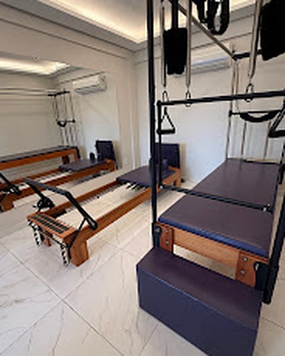
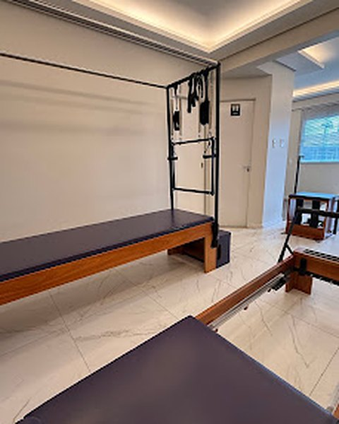
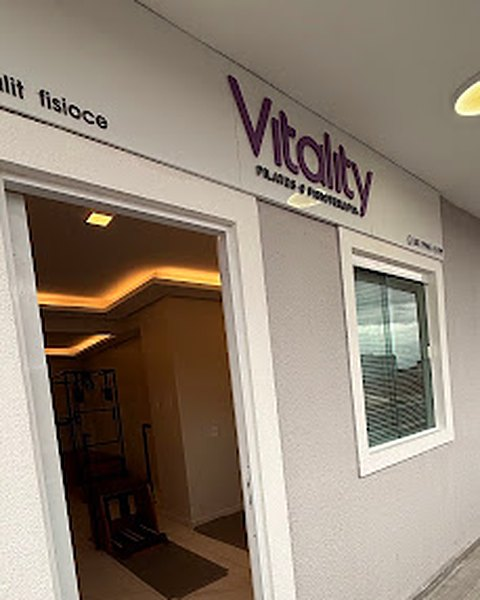
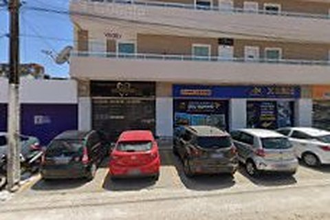

Movimento nos aparelhos e no solo.
Exercícios para trabalhar força, postura, flexibilidade e respiração, no seu ritmo.
- Cadillac, Reformer, Chair e Barrel
- Bolas, tatame e acessórios
- Exercícios adaptados ao seu nível
Aulas nos aparelhos e atendimento de fisioterapia em Fortaleza, com atenção a cada aluno.




Você pode vir pelo Pilates, pela fisioterapia ou combinar os dois.
Exercícios para trabalhar força, postura, flexibilidade e respiração, no seu ritmo.
Atendimento para dores e limitações de movimento, com um plano explicado em linguagem simples.
Diga o que você procura, Pilates ou fisioterapia, e combinamos um horário.
Conversamos sobre seus objetivos, seu histórico e qualquer dor ou limitação.
As aulas e sessões são ajustadas conforme você evolui.
Dar o primeiro passoLeva um minuto: é só mandar uma mensagem.
5,0Nota no Google, com 22 avaliações de alunos.
Avaliação no GoogleAmbiente aconchegante, agradável e excelente profissional. Atendimento vip.
Avaliação no GoogleRelação custo-benefício em relação ao preço excelente!
Avaliação no GoogleMuito dedicada no que faz, atenciosa e prestativa com os alunos.


Fica perto para quem mora na Maraponga e em bairros vizinhos de Fortaleza, como Mondubim, Jardim Cearense e Parangaba.
Na R. Carlos Studart, 640, sala 108, na Maraponga, em Fortaleza. Procure o letreiro roxo na entrada da sala 108.
Pode. Os exercícios são adaptados ao seu nível, e as molas dos aparelhos ajudam ou desafiam o movimento conforme a necessidade.
A fisioterapia avalia e trata dores, lesões e limitações de movimento. O Pilates é um método de exercícios que trabalha força, postura e flexibilidade. Os dois podem andar juntos.
Roupa confortável, que permita se movimentar com liberdade.
Pelo WhatsApp ou por telefone, no (85) 99651-5199. Diga se procura Pilates ou fisioterapia e combinamos o horário.
Diga se você procura Pilates ou fisioterapia e conte o que precisa. A gente tira as suas dúvidas e combina o melhor horário.
Prefere falar? Ligue para (85) 99651-5199.
Muito dedicada no que faz, atenciosa e prestativa com os alunos.
Avaliação no Google